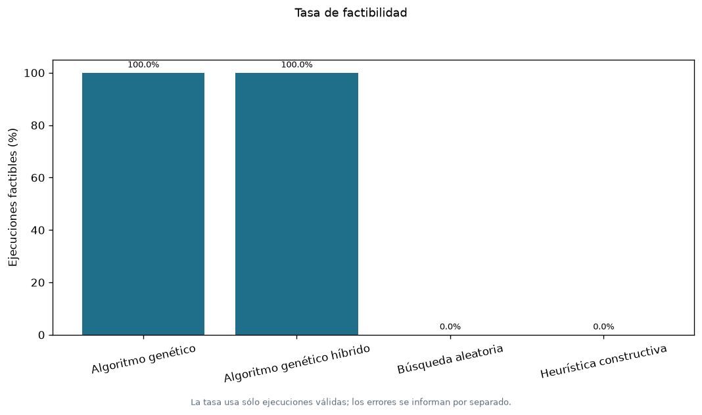
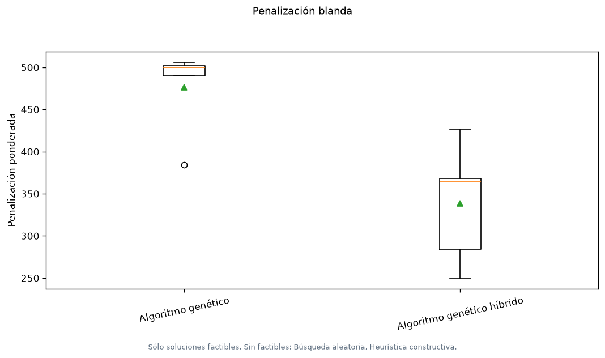
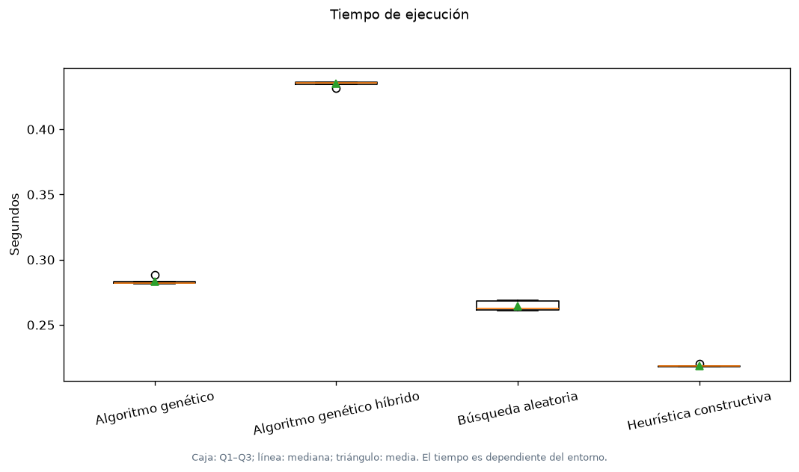
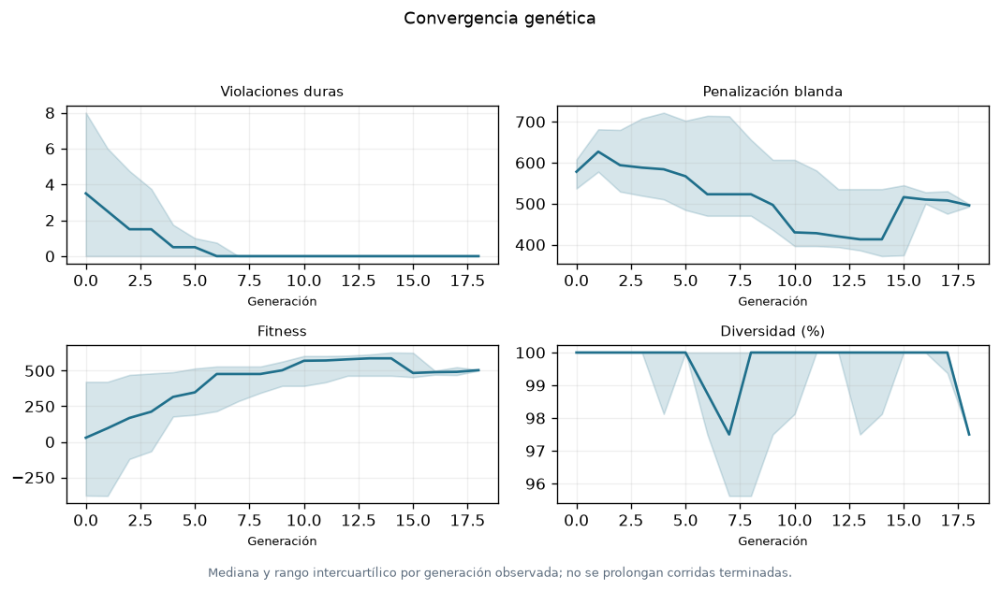
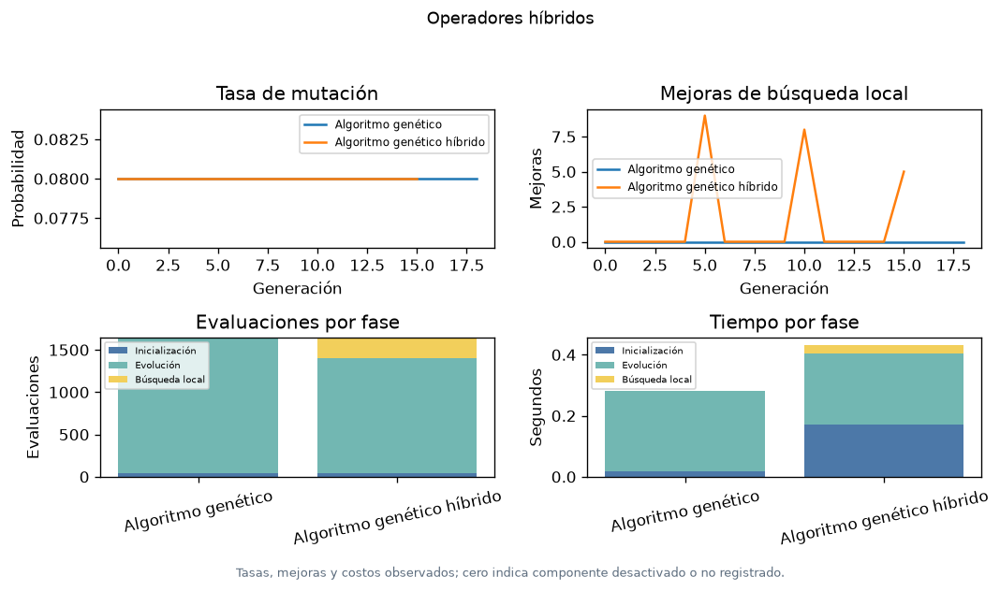

5 semillas, población 40, 40 generaciones, máximo común 1640 evaluaciones
Estado: completado · Escenario: pequeno ·
Huella SHA-256: a301536c83fdc524d6380f52ce857d3310d7063487dfba2d0090363e9c347f2b
Muestras válidas: 5 · Factibles: 5 · Tasa: 100.0%
Muestras válidas: 5 · Factibles: 5 · Tasa: 100.0%
Muestras válidas: 5 · Factibles: 0 · Tasa: 0.0%
Muestras válidas: 5 · Factibles: 0 · Tasa: 0.0%
| Método | Rep. | Semilla | Factible | Duras | Blanda | Fitness | Evaluaciones | Tiempo (s) | Parada |
|---|---|---|---|---|---|---|---|---|---|
| Algoritmo genético | 1 | 42 | Sí | 0 | 506 | 494 | 1640 | 0.2882 | presupuesto_evaluaciones |
| Algoritmo genético híbrido | 1 | 42 | Sí | 0 | 368 | 632 | 1640 | 0.4359 | presupuesto_evaluaciones |
| Búsqueda aleatoria | 1 | 42 | No | 8 | 730 | -530 | 1640 | 0.2616 | presupuesto_agotado |
| Heurística constructiva | 1 | 42 | No | 6 | 194 | 206 | 1640 | 0.2181 | presupuesto_agotado |
| Algoritmo genético | 2 | 43 | Sí | 0 | 384 | 616 | 1640 | 0.2834 | presupuesto_evaluaciones |
| Algoritmo genético híbrido | 2 | 43 | Sí | 0 | 364 | 636 | 1640 | 0.4358 | presupuesto_evaluaciones |
| Búsqueda aleatoria | 2 | 43 | No | 9 | 552 | -452 | 1640 | 0.2608 | presupuesto_agotado |
| Heurística constructiva | 2 | 43 | No | 4 | 318 | 282 | 1640 | 0.2186 | presupuesto_agotado |
| Algoritmo genético | 3 | 44 | Sí | 0 | 500 | 500 | 1640 | 0.2814 | presupuesto_evaluaciones |
| Algoritmo genético híbrido | 3 | 44 | Sí | 0 | 426 | 574 | 1640 | 0.4362 | presupuesto_evaluaciones |
| Búsqueda aleatoria | 3 | 44 | No | 9 | 484 | -384 | 1640 | 0.2629 | presupuesto_agotado |
| Heurística constructiva | 3 | 44 | No | 3 | 228 | 472 | 1640 | 0.2204 | presupuesto_agotado |
| Algoritmo genético | 4 | 45 | Sí | 0 | 490 | 510 | 1640 | 0.2820 | presupuesto_evaluaciones |
| Algoritmo genético híbrido | 4 | 45 | Sí | 0 | 250 | 750 | 1640 | 0.4346 | presupuesto_evaluaciones |
| Búsqueda aleatoria | 4 | 45 | No | 9 | 570 | -470 | 1640 | 0.2689 | presupuesto_agotado |
| Heurística constructiva | 4 | 45 | No | 2 | 220 | 580 | 1640 | 0.2181 | presupuesto_agotado |
| Algoritmo genético | 5 | 46 | Sí | 0 | 502 | 498 | 1640 | 0.2822 | presupuesto_evaluaciones |
| Algoritmo genético híbrido | 5 | 46 | Sí | 0 | 284 | 716 | 1640 | 0.4318 | presupuesto_evaluaciones |
| Búsqueda aleatoria | 5 | 46 | No | 8 | 498 | -298 | 1640 | 0.2684 | presupuesto_agotado |
| Heurística constructiva | 5 | 46 | No | 3 | 280 | 420 | 1640 | 0.2187 | presupuesto_agotado |





Interpretación descriptiva; no constituye una prueba de superioridad estadística. Mayor tasa de factibilidad observada: 100.0% (Algoritmo genético, Algoritmo genético híbrido). Menor mediana de penalización entre soluciones factibles: 364.00 (Algoritmo genético híbrido). El tiempo es secundario y puede variar según el equipo y la carga del sistema.
Resultados condicionados al escenario, semillas, presupuesto y pesos del modelo. El tiempo depende del equipo. La ausencia de una solución factible no demuestra imposibilidad matemática. No se afirma optimalidad global.